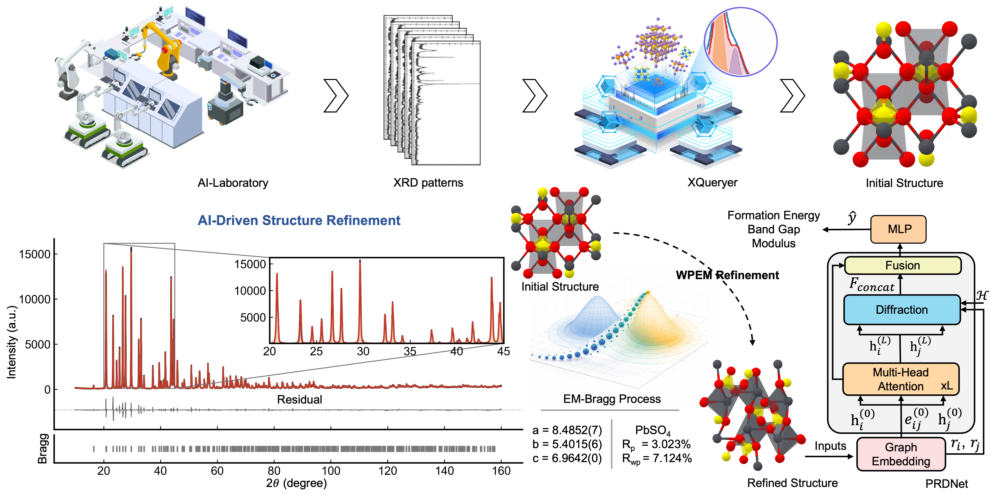
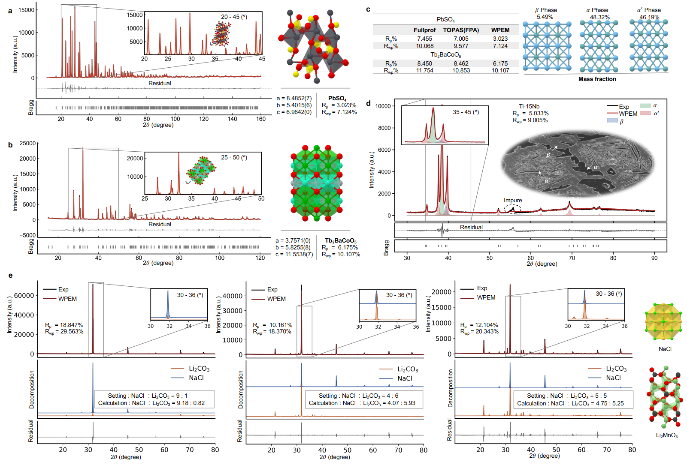
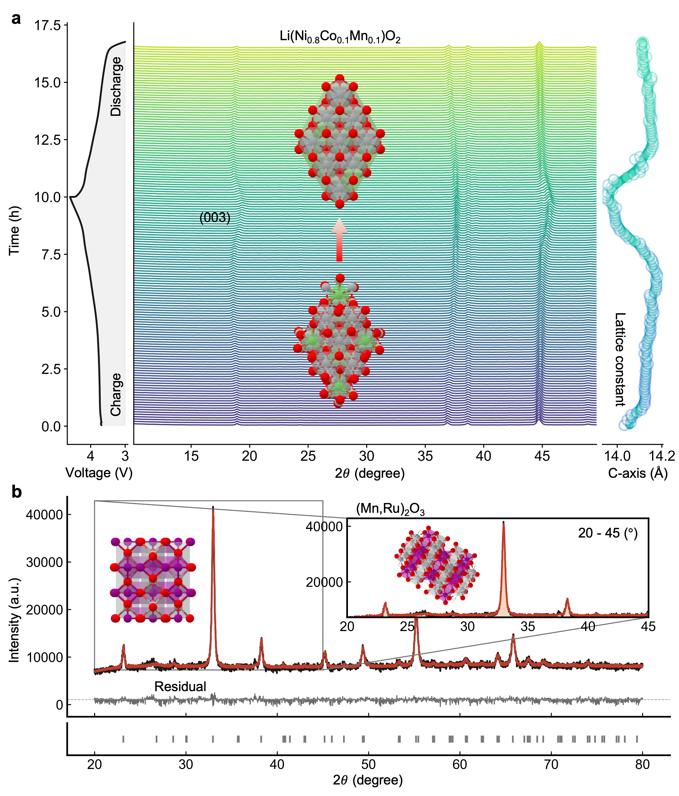
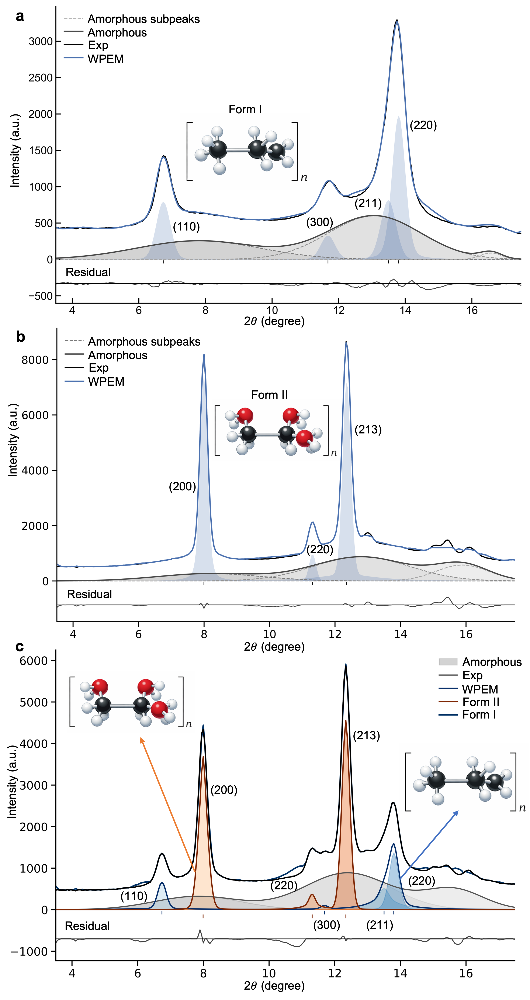

Physics-constrained refinement
WPEM converts AI-generated structure proposals into Bragg-admissible, refinement-ready inputs.
PyWPEM · Paper page
A physics-constrained bridge between AI-generated crystal hypotheses and crystallographic validation.
1 HKUST (Guangzhou) · 2 Shanghai University
Whole-pattern expectation-maximization (WPEM) embeds Bragg-law constraints into probabilistic whole-pattern decomposition for stable, refinement-ready XRD analysis.

Abstract
Artificial intelligence can generate plausible crystal hypotheses from X-ray diffraction, but these hypotheses often fail during refinement when intensities become non-identifiable under strong peak overlap. WPEM addresses this bottleneck by embedding Bragg consistency directly into batch expectation-maximization, producing a continuous, component-resolved intensity representation that is physically admissible, numerically stable, and refinement-ready.
Across reference benchmarks and challenging real-world regimes—including multiphase mixtures, semicrystalline polymers, operando tracking, disordered solids, and synchrotron archaeological samples—PyWPEM delivers robust whole-pattern decomposition while preserving crystallographic rigor.
Highlights
WPEM converts AI-generated structure proposals into Bragg-admissible, refinement-ready inputs.
Responsibility-weighted EM offers a soft, overlap-aware decomposition where conventional profile fitting may become fragile.
The method supports phase fractions, lattice tracking, and component-resolved analysis across complex XRD regimes.
Applications
Figures from main.pdf




Codebase
PyWPEM includes modules for simulation, Bragg optimization, refinement, graph construction, amorphous analysis, and XAS/XPS extensions. The implementation is designed for reproducible research workflows rather than visual complexity.
Citation
@article{cao2026wpem,
title = {AI-Driven Structure Refinement of X-ray Diffraction},
author = {Bin Cao and Qian Zhang and Zhenjie Feng and Taolue Zhang and Jiaqiang Huang and Lu-Tao Weng and Tong-Yi Zhang},
journal = {arXiv preprint},
year = {2026}
}